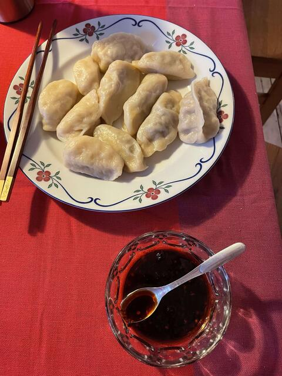
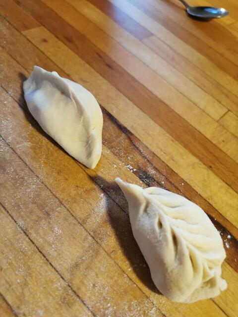

Dumplings are a traditional Chinese dish for celebration of festivals like Spring Festival. People usually gather with their family and make dumplings as a new year activity.

Figure 15: Carrot dumpling served with vinegar and laoganma.
Ingredients
The following list of ingredients serves 10 people.
Dough:
- 2.5 dl Regular flour
- 1 teaspoon of salt
- appropriate amount of water
Filling:
- 2 carrots
- 500g of minced meat
- 3-4 teaspoon salt
- 1 onion
- 1/5 ginger
- 25 Sichuan pepper grain
- 2 tablespoon oyster sauce
- 1 teaspoon chicken-soup powder
- 5 tablespoon oil(any oil will do)
- 2 teaspoon sesame oil
Dipping:
- vinegar
- laoganma
- soy sauce
Instructions
- Put flour and salt into the dough making machine, gradually add water until the dough becomes smooth enough.
- Set the dough aside covered for around half an hour.
- Soak the Sichuan pepper in 0.25 dl water for half an hour.
- Chop up carrots, garlic, onion, ginger.
- Fry carrots with oil till color darkens, let it cool to lukewarm.
- Add pepper water (pepper removed) to meat and mix.
- Put onion and ginger into the meat, add oils.
- Add fried carrots, oyster sauce, chicken-soup powder, salt. Mix and taste.
- Wrap the dumplings and boil 15 min.

Figure 19: Wrapped dumpling reference.